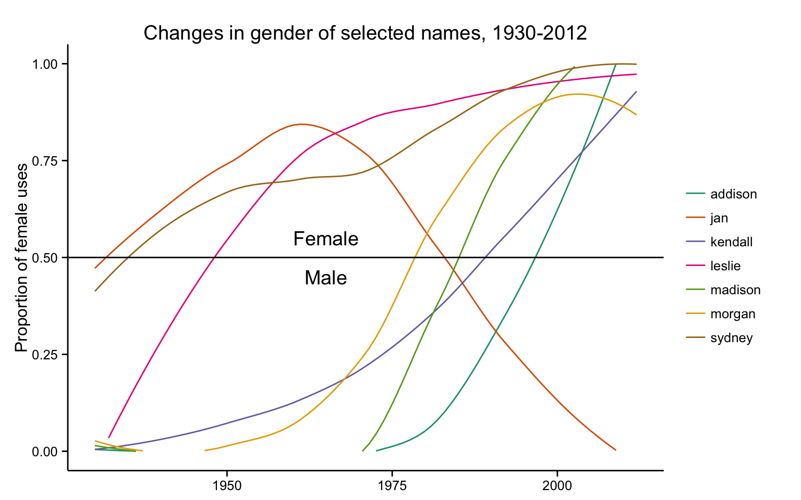
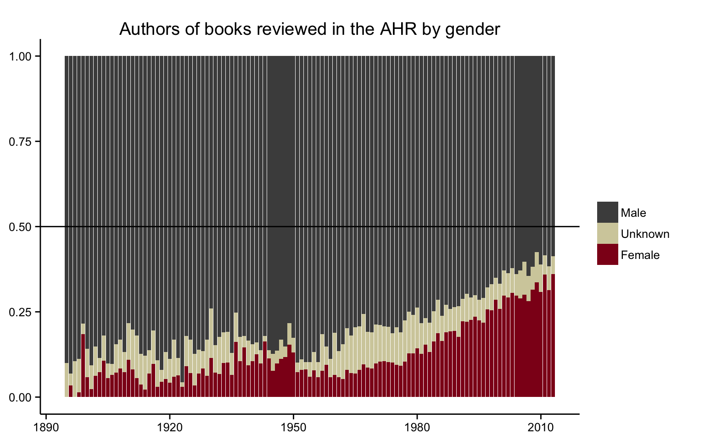

This article describes a new method for inferring the gender of personal names using large historical datasets. In contrast to existing methods of gender prediction that treat names as if they are timelessly associated with one gender, this method uses a historical approach that takes into account how naming practices change over time. It uses historical data to measure the likelihood that a name was associated with a particular gender based on the time or place under study. This approach generates more accurate results for sources that encompass changing periods of time, providing digital humanities scholars with a tool to estimate the gender of names across large textual collections. The article first describes the methodology as implemented in the gender package for the R programming language. It goes on to apply the method to a case study in which we examine gender and gatekeeping in the American historical profession over the past half-century. The gender package illustrates the importance of incorporating historical approaches into computer science and related fields.1
The analytical category of gender has transformed humanities research over the past half-century, and, more recently, widespread digitization has opened up opportunities to apply this category to new sources and in new ways. Initiatives like the Orlando Project, the Poetess Archive, and the Women Writers Project have done crucial work to recover the voices of female authors and writers [Orlando Project, n.d., Poetess Archive n.d., Women Writers Project n.d.]. Other scholars have used digital analysis to study linguistic styles of male and female playwrights or representations of gendered bodies in European fairytales [Argamon et. al. 2009, Weingart and Jorgensen 2013]. The proliferation of machine-readable datasets and digital texts brings with it a vast trove of material with which to study gender. Much more, however, can still be done. To better equip humanities researchers to take full advantage of digital sources, we have developed a methodology that infers gender from one of the most common features of humanities datasets: personal names.
As the digital archive grows larger and larger, researchers have not only been able to access information that is there, but to infer information that isn’t there. Topic modeling, for example, has been used to uncover underlying trends across a century of academic articles in literary studies. [Goldstone and Underwood 2014]. Can researchers similarly use personal names to infer information about individual people? After all, personal names appear across a wide range of sources in the humanities: literary characters in stories and novels, authorship information in archival metadata, or individuals mentioned by historical newspapers and magazine articles. Authors, characters, or historical actors are the sorts of people who stand at the analytical center of humanities scholarship, and their names provide an intriguing way to infer additional information about them.2
One of the basic pieces of information researchers can infer from a personal name is the gender of that individual: “Jane Fay,†for instance, is likely a woman, while her brother “John Fay†is likely a man. A computer program can infer their respective genders by looking up “Jane†and “John†in an existing dataset that matches names to genders. But this approach runs into a problem: the link between gender and naming practices, like language itself, is not static. What about Jane and John Fay’s sibling, Leslie? If Leslie was born in the past sixty years, chances are good that Leslie would be their sister. But if the three siblings were born in the early twentieth century, chances are good that Leslie would be their brother. That is because the conventional gender for the name Leslie switched over the course of one hundred years. In 1900 some 92% of the babies born in the United States who were named Leslie were classified as male, while in 2000 about 96% of the Leslies born in that year were classified as female.
Figure 1: Gender of the name Leslie, 1820-2012
For those working on contemporary subjects, the “Leslie problem†is not an especially pressing one. There are a variety of tools that use current databases of names. Genderize.io, for instance, predicts the gender of a first name from the user profiles of unnamed social media sites [Genderize.io n.d.]. A film scholar analyzing male and female characters in a database of modern American television shows might use Genderize.io to accurately predict the gender of these characters, including Leslie Fay. But researchers studying a longer timespan need to take into account the changing nature of naming practices. If that same film scholar wanted to compare the characters of modern television shows to characters during the silent film era, existing tools like Genderize.io would misidentify Leslie Fay’s gender in the earlier screenplays. Other names used in the United States such as Madison, Morgan, Sydney, and Kendall, have also flipped their gender over the past century and would similarly be misidentified. The prevalence of changes in the gender of names in the last half of the twentieth century implies that gendered lists of names drawn from contemporary data are anachronistic and so of limited use for datasets that encompass changing periods of time.3
 Figure 2: Proportion of female uses
The “Leslie problem†is not just for researchers who think of themselves as historians. Anyone studying a period longer than a few years, or anyone studying a group whose demographics do not match the groups used by a contemporary tool such as Genderize.io will also encounter this problem. A literary scholar studying a corpus of poems from the mid-twentieth century might wish to compare the stanza structures of male and female poets. Existing tools based on contemporary data risks misidentifying these writers, many of whom were born (and named) more than a century prior to the creation of these modern name datasets. This problem will only increase with growing life expectancies: as of 2012, the average American lifespan was nearly seventy-nine years—more than enough time for naming practices to change quite dramatically between a person’s birth and death [World Bank 2014]. Predicting gender from first names therefore requires a dynamic method that takes into change over time.
Our solution to the “Leslie problem†is to create a software package that combines a predictive algorithm with several historical datasets suitable to various times and regions. The algorithm calculates the proportion of male or female uses of a name in a given birth year or range of years. It thus can provide not only a prediction of the gender of a name, but also a measure of that prediction’s accuracy. For example, our program predicts that a person named Leslie who was born in 1950 is female, but reports a low level of certainty in that prediction, since just 52 percent of the babies named Leslie born in the United States in 1950 were girls and 48 percent were boys. These probabilities help a user determine what level of certainty is acceptable for predicting the gender of different names.
Researchers who use this method need to be fully aware of its limitations, in particular its dependency on a state-defined gender binary. Inferring gender from personal names is a blunt tool to study a complex subject. Gender theorists and feminist scholars have spent decades unpacking the full range of meanings behind gender as an analytical concept, including the fluid relationship between biological sex and gender identity [Butler 1990, Butler 1993]. On its own, our method has little to say about crucial topics such as the intersectionality of gender with race, class, and power, the lives of transgender people, or what the categories “male†or “female†mean in any given historical and social context [Crenshaw 1991, McCall 2005]. The leap from datasets that contain records of sex at birth to gender has rightly been critiqued by scholars [Posner 2015, Westbrook and Saperstein 2015]. The tool cannot reflect how an individual person self-identifies and how gender shapes their lived experience, since it relies on large datasets created by state agencies such as the U.S. Census Bureau. Much like the state’s definition of racial categories, governments impose a gender binary in their data collection that says more about existing power structures than the ways in which people self-identify. [Brubaker and Cooper 2000, 14-17, Pascoe 2009, Canaday 2011, Landrum 2014]. When using the predictions provided by this method, users must judge for themselves how they reflect the social and cultural practices of the time and place under study.
Imperfect as it is, this method nevertheless gives digital humanities scholars a much-needed tool to study gender in textual collections. We have made the method as transparent and flexible as possible through the inclusion of probability figures. This makes the underlying data visible to users and allows them the opportunity to interrogate the assumptions that come with it. When used thoughtfully, this method can infer additional information about individuals who stand at the heart of humanities scholarship, providing another way to see and interpret sources across large scales of analysis.
The remainder of this article is divided into two sections. First, we describe our method in more detail, outline its advantages over existing methods, and explain how to use it. Second, we apply the method to a case study of gatekeeping in the historical profession in order to demonstrate its usefulness for humanities scholars.
Why do scholars need a method for inferring gender that relies on historical data? Let’s start with a comparison. One existing method for predicting gender is available in the Natural Language Toolkit for the Python programming language [Bird et al. 2009, Chapter 2].4 The NLTK is an influential software package for scholarship because it provides an extraordinary range of tools for analyzing natural language.5 Included in the NLTK are two lists of male and female names created by the computer scientist Mark Kantrowitz with assistance from Bill Ross.6 These lists include 7,576 unique names. Using the Kantrowitz names corpus in the NLTK, one could look up a name like Jane or John and find out whether it is male or female.
The Kantrowitz corpus provides the list of names.7
genderdata::kantrowitz## Source: local data frame [7,579 x 2]
##
## name gender
## 1 aamir male
## 2 aaron male
## 3 abbey either
## 4 abbie either
## 5 abbot male
## 6 abbott male
## 7 abby either
## 8 abdel male
## 9 abdul male
## 10 abdulkarim male
## .. ... ...One can then easily write a function which looks up the gender of a given name.
gender("abby", method = "kantrowitz")## Source: local data frame [1 x 2]
##
## name gender
## 1 abby eitherThe most significant problem with the Kantrowitz names corpus and thus the NLTK implementation is that it assumes that names are timeless. As pointed out above, this makes the corpus problematical for historical purposes. Furthermore the Kantrowitz corpus includes other oddities which make it less useful for research. Some names such as Abby are overwhelmingly female and some such as Bill are overwhelmingly male, but the corpus includes them as both male and female. The Kantrowitz corpus contains only 7,576 unique names, a mere 8.3% of the 91,320 unique names in a dataset provided by the Social Security Administration and 2.23% of the 339,967 unique names in the census records provided in the Integrated Public Use Microdata Series (IPUMS) USA dataset. There are therefore many names that it cannot identify. Assuming for the moment that our method provides more accurate results, we estimate that 4.74% percent of the names in the Kantrowitz corpus are classified as ambiguous when a gender could be reasonably predicted from the name, that 1.24% percent of the names are classified as male when they should be classified as female, and that 1.82% are classified as female when they should be classified as male. This error rate is a separate concern from the much smaller size of the Kantrowitz corpus.8
We mention the Kantrowitz name corpus as implemented in NLTK because the Natural Language Toolkit is rightly regarded as influential for scholarship. Its flaws for predicting gender, which are a minor part of the software’s total functionality, are also typical of the problems with most other implementations of gender prediction algorithms. The Genderize.io API is, for example, a more sophisticated implementation of gender prediction than the NLTK algorithm. Besides predicting male or female for gender, it also reports the proportion of male and female names, along with a count of the number of uses of the name on which it is basing its prediction. Genderize will also permit the user to customize a prediction for different countries, which is an important feature. Genderize.io reports that its “database contains 142848 distinct names across 77 countries and 85 languages.†Genderize is unsuitable for historical work, however, because it is based only on contemporary data. According to the documentation for its API, “it utilizes big datasets of information, from user profiles across major social networks.†It would be anachronistic to apply these datasets to the past, and Genderize.io provides no functionality to filter results chronologically as it does geographically. In addition, Genderize.io does not make clear exactly what comprises the dataset and how it was gathered, which keeps scholars from interrogating the value of the source [Genderize.io 2014-].9
R and Python are two of the most commonly used languages for data analysis [Piatesky 2013, Muenchen 2014-]. Surveys and analysis of usage point out the growth of R and the continuing popularity of Python for data science generally, and scholars are producing guides to using these languages for historical or humanities research [Programming Historian n.d., Arnold and Tilton 2015, Jockers 2014a]. Yet Python’s existing packages for gender prediction all implement a method similar to the NLTK or Genderize.io.10 The only other R package for gender prediction, genderizeR, uses the Genderize.io API. Thus two of the most popular data analysis languages used in the digital humanities currently have no satisfactory method for predicting gender from names for historical and humanities research.
To that end we have created the gender package for R which includes both a predictive algorithm and an associated genderdata package containing various historical datasets. This R implementation is based on an earlier Python implementation by Cameron Blevins and Bridget Baird.
We have chosen the R programming language for a constellation of reasons. The R language is open-source, so it is freely available to scholars and students. The language has a strong tradition of being friendly to scholarship. It was originally created for statistics and many of its core contributors are academics; it provides facilities for citing packages as scholarship. CRAN (the Comprehensive R Archive Network) offers a central location for publishing R packages for all users. These include a rigorous set of standards to ensure the quality of packages contributed. R has a number of language features, such as data frames, which permit easy manipulation of data.11 In particular, R permits the publication of packages containing data alongside packages containing code—a crucial feature for the gender package. The gender package is affiliated with rOpenSci, an initiative that supports reproducible research and open data for scientists using R. The rOpenSci advisory board has provided code review, publicity, and an infrastructure to support the project. Finally, our method is in principle extensible to other languages, such as Python, should other scholars choose to do so.
Inferring gender from names depends on two things. First, it requires a suitable (and suitably large) dataset for the time period and region under study. Unsurprisingly such datasets are almost always gathered in the first instance by governments, though their compilation and digitization may be undertaken by scholarly researchers. Second, it depends on a suitable algorithm for estimating the proportion of male and female names for a given year or range of years, since often a person cannot be associated with an exact date. It is especially important that the algorithm take into account any biases in the data to formulate more accurate predictions. Development of the R package has had two primary aims. The first is to abstract the predictive algorithm to the simplest possible form so that it is usable for a wide range of historical problems rather than depending on the format of any particular data set. The second has been to provide as many datasets as possible in order for users to tailor the algorithm’s predictions to particular times and places.
The gender package currently uses several datasets which make it suitable for studying the United States from the first federal census in 1790 onwards. The first dataset contains names of applicants for Social Security and is available from Data.gov [Social Security Administration 2014a]. The second dataset contains names gathered in the decennial censuses and is available from the IPUMS-USA (Integrated Public Use Microdata Series) service from the Minnesota Population Center at the University of Minnesota [Ruggles et al. 2010].
The Social Security Administration (SSA) Baby Names dataset was created as a result of the Social Security Act of 1935 during the New Deal.12 This dataset contains a list of first names along with how many times each name was assigned to each gender in every year beginning with 1880 and ending with 2012. The SSA list includes any name which was used more than five times in a given year, thereby capturing all but the most infrequently used names from each year. The description “baby names†provided by the SSA is a serious misnomer. When Social Security became available during the New Deal, its first beneficiaries were adults past or near retirement age. The dataset goes back to 1880, the birth year for a 55 year-old adult when Social Security was enacted. Even after 1935, registration at birth for Social Security was not mandatory until 1986. As we will demonstrate below, the way in which the data was gathered requires an adjustment to our predictions of gender.13
The IPUMS-USA dataset, contributed by Benjamin Schmidt, contains records from the United States decennial census from 1790 to 1930. This dataset includes the birth year and numbers of males and females under the age of 62 for all the years in that range. This data has been aggregated by IPUMS at the University of Minnesota and is released as a sample of the total census data. Unlike the SSA dataset, which includes a 100% sample for every name reported to the Social Security Administration and used more than five times, the IPUMS data contains 5% or 10% samples of names from the total census data. Because the gender() function relies on proportions of uses of names, rather than raw counts of people with the names, the sampling does not diminish the reliability of the function’s predictions [Ruggles et al. 2010].
The gender package also features a dataset from the North Atlantic Population Project. This dataset includes names from Canada, Great Britain, Germany, Iceland, Norway, and Sweden from 1801 to 1910.14 The SSA, IPUMS, and NAPP datasets (and any future datasets to be added to the package) all have the same simple tabular format.15 The columns contain the name, year, and number of female and male uses of that name in a particular year. This simple format makes it possible to extend the package to include any place and time period for which there is suitable data.16
genderdata::ssa_national## Source: local data frame [1,603,026 x 4]
##
## name year female male
## 1 aaban 2007 0 5
## 2 aaban 2009 0 6
## 3 aaban 2010 0 9
## 4 aaban 2011 0 11
## 5 aaban 2012 0 11
## 6 aabha 2011 7 0
## 7 aabha 2012 5 0
## 8 aabid 2003 0 5
## 9 aabriella 2008 5 0
## 10 aadam 1987 0 5
## .. ... ... ... ...Our method for predicting gender is best understood through a series of examples. First we will use it to predict the gender of a single name in order to demonstrate a simplified version of the inner workings of the function. We will then apply it to a small sample dataset to show how a researcher might use it in practice.
Example #1: A Sample Name
The method for predicting gender from a name using the package’s datasets is simple. Let’s begin by assuming that we want to predict the gender of someone named Sidney who was born in 1935 using the Social Security Administration dataset. Because the dataset contains a list of names for each year, we can simply look up the row for Sidney in 1935. Using the dplyr package for R, which provided a grammar for data manipulation, this can be expressed with the action “filter”:
genderdata::ssa_national %>%
filter(name == "sidney", year == 1935)## Source: local data frame [1 x 4]
##
## name year female male
## 1 sidney 1935 93 974Thus, according to the Social Security Administration, there were 974 boys and 93 girls named Sidney born in 1935. We can add another command to calculate the proportion of females and males (“mutate†in the vocabulary of the dplyr package) rather than raw numbers.
genderdata::ssa_national %>%
filter(name == "sidney", year == 1935) %>%
mutate(proportion_female = female / (male + female),
proportion_male = 1 - proportion_female)## Source: local data frame [1 x 6]
##
## name year female male proportion_female proportion_male
## 1 sidney 1935 93 974 0.08716026 0.9128397In other words, there is an approximately 91.3% percent chance that a person born in 1935 named Sidney was male. In 2012, for comparison, there was an approximately 60.7% percent chance that a person born named Sidney was female.17
The method is only slightly more complex if we do not know the exact year when someone was born, as is often the case for historical data. Suppose we know that Sidney was born in the 1930s but cannot identify the exact year of his or her birth. Using the same method as above we can look up the name for all of those years.
genderdata::ssa_national %>%
filter(name == "sidney", year >= 1930, year <= 1939) ## Source: local data frame [10 x 4]
##
## name year female male
## 1 sidney 1930 48 1072
## 2 sidney 1931 48 940
## 3 sidney 1932 57 958
## 4 sidney 1933 77 949
## 5 sidney 1934 78 930
## 6 sidney 1935 93 974
## 7 sidney 1936 81 952
## 8 sidney 1937 63 902
## 9 sidney 1938 89 875
## 10 sidney 1939 63 861Next we can sum up the male and female columns (“summarize†in dplyr package vocabulary) and calculate the proportions of female and male uses of “Sidney†during that decade.
genderdata::ssa_national %>%
filter(name == "sidney", year >= 1930 & year <= 1939) %>%
group_by(name) %>%
summarize(female = sum(female),
male = sum(male)) %>%
mutate(proportion_female = female / (male + female),
proportion_male = 1 - proportion_female)## Source: local data frame [1 x 5]
##
## name female male proportion_female proportion_male
## 1 sidney 697 9413 0.06894164 0.9310584In other words, for the decade of the 1930s, we can calculate that there is a 93.2% percent chance that a person named Sidney was male. This is roughly the same as the probability we calculated above for just 1935, but our method also returns the figures it used to calculate those probabilities: 1,067 instances of “Sidney†in 1935 versus 10,110 total instances for the decade as a whole.
Example #2: A Sample Dataset
The method’s real utility stems from being able to process larger datasets than a single name. Let’s use, for example, a hypothetical list of editors from a college newspaper to illustrate how a researcher might apply it to their own data. The package’s prediction function allows researchers to choose which reference datasets they would like to use and the range of years for making their predictions.
editors## Source: local data frame [6 x 2]
##
## name birth_year
## 1 Madison 1934
## 2 Madison 1990
## 3 Morgan 1948
## 4 Morgan 1970
## 5 Jan 1965
## 6 Jan 1998By taking into account the year of birth, we find that four of our six names were likely male, whereas we might otherwise have predicted that all six were female. We also now know the approximate likelihood that our predictions are correct: at least 80% for all of these predictions.
It is also possible to use a range of years for a dataset like this. If our list of editors contained the year in which the person served on the newspaper rather than the birth year, we could make a reasonable assumption that their ages were likely to be between 18 and 24. We could then calculate a minimum and a maximum year of birth for each, and run the prediction function on that range for each person. The exact code to accomplish these types of analysis can be found in the vignette for the gender package.
As previously mentioned, the history of how the Social Security Administration collected the data affects its validity. Specifically, because the data extends back to 1880 but the first applications were gathered after 1935, the sex ratios in the dataset are skewed in the years before 1930. For example, this dataset implies that thirty percent of the people born in 1900 were male.
Figure 3: Percentage of SSA dataset that is female
It is extremely improbable that nearly seventy percent of the people born in 1900 were female.18 Exactly why the dataset has this bias is unclear, though we speculate that it is because the applicants for Social Security in the early years of the program were approaching retirement age, which was set much closer to the average life expectancy in 1935 than it is today. Since women tend to live longer than men, they were overrepresented in Social Security applications.
The solution to this problem is two-fold. First, we recommend that researchers use the IPUMS-USA dataset to make predictions for years from 1790 to 1930 (which avoids the “bubble†in the SSA data) and that they use the SSA dataset for years after 1930.19 Second, we have built in a correction to the SSA dataset when using the gender() function. If we assume that the secondary sex ratio (that is, the ratio of male to female births) in any given year does not deviate from 0.5 (that is, equality), it is possible to calculate a correction factor for each year or range of years to even out the dataset. We apply this correction factor automatically when using the SSA dataset.
A case study that relies on the gender package illustrates how the method can reveal hidden patterns within large textual collections. In a 2005 report for the American Historical Association, Elizabeth Lunbeck acknowledged “a sea change in the [historical] profession with respect to gender†before going on to describe the limits to this change for female historians, who face ongoing personal discrimination, lower salaries, and barriers to securing high-ranking positions. Lunbeck’s report drew in part on a survey of 362 female historians that produced a rich source of responses detailing the entrenched and multi-faceted challenges facing women in the profession [Lunbeck 2005]. What follows is a quantitative supplement to Lunbeck’s analysis that uses our program to analyze gender representation amongst historians across a much larger scale and a much longer time period. We study one of the bedrocks of the historical profession—scholarly research—and focus on two types of output: the dissertation and the monograph. Although women have achieved rough parity with men in terms of the number of completed dissertations, female historians continue to face an unequal playing field in the monographic landscape. Applying our method to the pages of the American Historical Review reveals a persistent and significant gap in the number of male-authored and female-authored books reviewed by one of the field’s premier academic journals.
We begin with the history dissertation, often the defining scholarly output of a historian’s early career. The completion of a dissertation marks a standardized moment of transition out of the training phase of the historical profession. To identify how many women and men completed PhD-level training in history each year, we used data supplied by ProQuest for roughly eighty thousand PhD dissertations completed in the United States between 1950 and 2012.20 Our program used the year a historian wrote his or her dissertation to estimate a period for when they might have been born, assuming that a historian was between 25 and 45 years old when completing their dissertation. With this temporal information, we were able to infer their gender and chart how the larger representation of women and men changed year-by-year.
Figure 4: Dissertations about history by gender, 1950-2012
Another way to examine this trend is to ignore changes in the absolute number of dissertations produced each year and to instead look at changes in the proportion of male and female dissertation authors. The proportion of dissertations written by women has steadily increased over the past half-century, a change that began in the late 1960s and continued through the early 2000s. Since that point, the proportion of dissertations written by women has largely plateaued at a few percentage points below the proportion written by men. Female historians have achieved something approaching parity with male historians in terms of how many women and men complete dissertations each year.
Figure 5: Proportion of dissertations about history by gender 1950-2012
But the dissertation is only the first major piece of scholarship produced by an academic historian. The second usually centers on the writing of an academic monograph to be read and evaluated by their peers. These monographs remain the “coin of the realm†for many historians, and the value of that coin often depends on it being reviewed in academic journals. To study the role of gender in monograph reviews, we turn to one of the leading journals in the historical profession: the American Historical Review, the flagship journal of the American Historical Association. The AHR publishes roughly one thousand total book reviews spread across five issues each year, covering (in its own words) “every major field of historical study.†[American Historical Review n.d.] The AHR is not only one of the widest-ranging journals in the profession, it is also the oldest; the journal has been publishing continuously since 1895. The range, scope, longevity, and reputation of the AHR makes it an ideal proxy to study how professional gatekeeping operates in relation to gender.
A few caveats are in order. First, a book that is never reviewed by the AHR may still go on to have a significant impact on the profession. Second, a book’s appearance in the AHR is not necessarily correlated with the quality of the book, as the journal prints negative reviews as well as positive ones. Nevertheless, when a book appears in the AHR it serves as a signal that other historians in positions of power are taking it seriously. Even if it garners a negative review, the fact that it appears in the journal at all is a measure of the fact that the profession’s gatekeepers have deemed it important enough to review. It is precisely this professional gatekeeping dimension that we can analyze using the gender package: are books by men more likely to be reviewed then books by women, and if so, how much more likely?
Scraping the table-of-contents of every issue of the American Historical Review results in a dataset of close to 60,000 books reviewed by the journal since it began publication in 1895. Our program then inferred the gender of the authors of these books, which we could in turn use to plot the proportion of female and male authors over time. The temporal trajectory of gender representation in the journal’s reviews roughly resembles that of history dissertations: women began making inroads in the late 1960s and continued to make steady gains over the next four decades. By the twenty-first century, the proportion of female authors reviewed in the AHR had more than tripled.
 Figure 6: Authors of books reviewed in the AHR by gender
But a closer look shows substantial differences between the proportion of women as the authors of history dissertations and the proportion of women appearing in the AHR as the authors of reviewed books. Although both have trended upwards since the 1970s, the slope of that line was a lot steeper for dissertations than it was for the AHR. Female historians have very nearly closed the gap in terms of newly completed dissertations, but the glass ceiling remains much lower in terms of getting reviewed by the discipline’s leading academic journal. The long-term gains made by female doctoral students do not carry over into the pages of the American Historical Review, where male monograph authors continue to outnumber female authors by a factor of nearly 2 to 1.21
Figure 7: Gender Gap of Dissertations and of Books Reviewed in the AHR
Not every historian wants or seeks a career path that neatly moves from writing a dissertation to authoring a monograph to being reviewed in the American Historical Review. For those that do, however, each of these subsequent stages represents a winnowing process: not all graduate students produce dissertations, not all PhDs write books, not all books are submitted to the American Historical Review, and not all submissions are accepted by the AHR editors for review.22 Slighty fewer women than men go through the initial stage of writing a history dissertation. But by the final round of gatekeeping—a monograph reviewed in the AHR—the gender gap grows until there are little more than half as many women as men. The American Historical Review is, unfortunately, far from alone. Many of the profession’s most prestigious annual honors go to drastically more men than women. As of 2015, the Pulitzer Prize for History has been awarded to exactly two female historians in the past twenty years [“The Pulitzer Prizes: History†2015-]. The Bancroft Prize in American History has been awarded to almost five times as many male historians as female historians over that same period [“Bancroft Prize”].
Examples like the Pulitzer and Bancroft Prizes are only the most obvious cases of gender inequity in the historical profession. Overt discrimination still exists, but inequity operates in ways that are far more cloaked and far more complex, making them difficult to recognize and remedy. They take the form of subconscious bias that subtly weakens the assessment of work done by female historians, whether in a seminar paper or a job application. Moreover, gender discrimination frequently intersects with other kinds of racial and socioeconomic inequity that erects even higher barriers in women’s careers [Townsend 2008]. Gendered family dynamics add another layer of challenges for women: a 2011 survey by the American Historical Association revealed that female historians dedicated substantially more time to child and elder care than their male colleagues, leaving them with less time for the kind of academic research that the profession rewards most highly [Townsend 2012]. All of these factors combine and amplify each other to contribute to the gender gap in the historical profession on display in the pages of the American Historical Review. The hidden, murky, and systemic dimensions of gender inequity makes methods like the gender package all the more imperative for reasearchers.
Finally, we used the gender package to reveal some of the subtler ways in which gender iniquity operates in the historical profession. After inferring the gender of book authors reviewed by the AHR, we were also able to infer the gender of the reviewers themselves. This led us to two findings. First, the story is much the same for reviewers as it is for authors: more than twice as many men as women appear as reviewers in the journal. This is important because reviewers for the AHR garner a certain degree of prestige from their work—perhaps not to the same prestige as winning a Pulitzer Prize, but prestige nonetheless. To become a reviewer, one must possess a PhD or equivalent degree and have published at least one book-length manuscript [American Historical Review n.d.]. AHR reviewers are understood to have sufficient experience and command over a given sub-field to evaluate the merits and weaknesses of a new contribution to that literature. Being a reviewer for the journal is, in many ways, a proxy for expertise. When there are twice as many male “experts†as female “experts†appearing in the AHR it imbues our understanding of what constitutes historical expertise and who possesses it.
The second finding we arrived at when examining the gender of AHR reviewers was a better understanding of who reviews which book authors. Once again, the methodology reveals patterns that we might suspect but tend to stay hidden from direct sight. About three times as many men as women write reviews of male-authored books in the AHR. For female-authored books, the ratio of female-to-male reviewers is closer to 50/50. In short, women are far more likely to write reviews of other women, while men tend to gravitate more towards male authors—who are, of course, already over-represented in the AHR.
Figure 8: Gender of reviewers of MALE book authors in AHR
Figure 9: Gender of reviewers of FEMALE book authors in AHR
The findings related to AHR reviewers help illustrate the ways in which gender inequity in the profession is so insidious. It is not always an overt case of deciding to award a prestigious prize to a male historian; it can be as seemingly innocuous as deciding to write a book review of a male author’s book. Countless individual actions like these constitute the core relationships that knit together the profession, and too often these tiny actions benefit men more than women: chairing a panel of mostly male historians, taking on a new male advisee, or assigning mostly male-authored books on a syllabus. On their own they might appear benign—one might argue that male historians simply happen to be interested in similar research topics—but in aggregate they contribute to a broader professional landscape that puts female historians at a disadvantage.
One 2013 analysis of 2,500 recent history PhDs found that “gender played little role in employment patterns across particular professions and industries†[Wood and Townsend 2013]. Our own analysis reveals a different story, at least in terms of getting a book reviewed in the field’s most prestigious journal. The American Historical Review continues to publish twice as many reviews of male-authored books as female-authored books, and those same reviews are more than twice as likely to be written by a man than a woman. This disparity is put into even sharper relief when set against the much smaller gender gap between female and male historians who complete dissertations. Women might be getting hired at comparable rates to men, but discriminatory gatekeeping remains alive and well in the profession. The gender package is one more tool to uncover those practices.
The digital turn has made large datasets widely available, yet in the midst of abundance many humanists continue to deal with the problem of incompleteness and scarcity within their sources. Our method uses abundant existing datasets to infer additional information from scarce datasets. Its major contribution is to incorporate a historical method, one that takes into account how gendered naming practices have changed over time. This temporal approach provides much improved results over simpler, anachronistic, or ahistorical lookup methods. The gender package is, of course, far from perfect. By relying on historical datasets collected by state agencies, it reinforces a gender binary and larger power structure that obscures how people may identify themselves and how they experience the world. To borrow a phrase from Miriam Posner, the gender package does not necessarily meet the “radical, unrealized potential of digital humanities†[Posner 2015]. While we agree with this line of critique, we don’t think it should deter researchers from using our method.23
The gender package makes a pragmatic trade-off between complexity and discovery. Its reliance on a male/female binary dampens the complexity of gender identity while simulatenously pointing towards new discoveries about gender within large textual collections. Its use of historical datasets helps its users uncover patterns where they were previously unknown, providing further grist to the mill of more traditional methods. Furthermore, the gender package is entirely open-source, and we have provided detailed documentation for its code and underlying data so that those who wish to build upon it can modify the package accordingly. For instance, future researchers might compile datasets of names that move beyond the gender binary imposed by government agencies. They could then incorporate these datasets into the gender package, replacing “male†and “female†designations with a much wider spectrum of potential gender identities.
As it currently stands, the gender package meets an important methodological need. As of August 2015, the gender package has been downloaded more than 22,000 times and incorporated as a pedagogical tool within digital humanities courses [Jockers 2014b].24 Researchers have used it to uncover instances gender inequity in a range of different areas, from biases in students’ teaching evaluations to the disparities between attendees and authors at the annual Digital Humanities Conference [Schmidt 2015, Weingart 2015]. These implementations illustrate the value of the method. Its major intervention is to algorithmically infer gender in textual sources in a way that takes into account change over time. Rather than trying to shoehorn existing computer science methods to fit humanities research, the gender package reverses this traditional disciplinary relationship. It uses a humanistic starting point—the historical relationship between gender and naming practices—to contribute a new method to computer science.
[American Historical Review n.d.] American Historical Review. “Book Reviewing in the AHR.†http://www.historians.org/publications-and-directories/american-historical-review/book-review-guide. Accessed 23 June 2015.
[Argamon et. al. 2009] Argamon, Shlomo, Jean-Baptiste Goulain, Russell Horton, and Mark Olsen. “Vive la Différence! Text Mining Gender Difference in French Literature†Digital Humanities Quarterly. 3.2 (2009). http://www.digitalhumanities.org/dhq/vol/3/2/000042/000042.html.
[Arnold and Tilton 2015] Arnold, Taylor, and Lauren Tilton. Humanities Data in R: Exploring Networks, Geospatial Data, and Text. Springer, USA, 2015.
[“Bancroft Prize”] “Bancroft Prize.†Wikipedia http://en.wikipedia.org/wiki/Bancroft_Prize. Accessed 5 October 2014.
[Bird et al. 2009] Bird, Steve, Edward Loper, and Ewan Klein. Natural Language Processing with Python (O’Reilly, 2009).
[Brubaker and Cooper 2000] Brubaker, Rogers, and Frederick Cooper. “Beyond ‘identity.’†Theory and Society 29.1 (2000): 1–47.
[Butler 1989] Butler, Judith. Gender Trouble: Feminism and the Subversion of Identity. New York: Routledge, 1990.
[Butler 1993] Butler, Judith. Bodies That Matter: On the Discursive Limits of Sex. New York: Routledge, 1993.
[Canaday 2011] Canaday, Margot. The Straight State: Sexuality and Citizenship in Twentieth-Century America. Princeton, N.J.: Princeton University Press, 2011.
[Crenshaw 1991] Crenshaw, Kimberle. “Mapping the Margins: Intersectionality, Identity Politics, and Violence against Women of Color.†Stanford Law Review. 43.6 (July 1991): 1241-1299.
[Csardi 2015] Csardi, Gabor. cranlogs: Download Logs from the RStudio CRAN Mirror. R package version 2.0.0 (2015): http://CRAN.R-project.org/package=cranlogs
[Eckert 2012] Eckert, Penelope. “Coding for Gender and Sexuality.†NSF-LDC workshop on coding sociolinguistic corpora. LSA Annual Meeting, Portland (2012). https://www.ldc.upenn.edu/sites/www.ldc.upenn.edu/files/eckert-paper.pdf.
[Genderize.io n.d.] Genderize.io. http://genderize.io/. Accessed 15 September 2014.
[Goldstone and Underwood 2014] Goldstone, Andrew, and Ted Underwood. “The Quiet Transformations of Literary Studies: What Thirteen Thousand Scholars Could Tell Us.†New Literary History 45.3 (Summer 2014): 359-384.
[Healy 2013] Healy, Kieran. “Using Metadata to Find Paul Revere.†kieranhealy.org. 9 June 2013, http://kieranhealy.org/blog/archives/2013/06/09/using-metadata-to-find-paul-revere/.
[Jockers 2014a] Jockers, Matthew. Text Analysis with R for Students of Literature. Springer, USA, 2014.
[Jockers 2014b] Jockers, Matthew. “Experimenting with “gender†package in R.†Matthew L. Jockers. 25 February 2014, http://www.matthewjockers.net/2014/02/25/experimenting-with-gender-package-in-r/. Accessed 10 August 2015.
[Landrum 2014] Landrum, Shane. “The State’s Big Family Bible: Birth Certificates, Personal Identity, and Citizenship in the United States, 1840–1950.†PhD dissertation, Brandeis University, August 2014.
[Lunbeck 2005] Lunbeck, Elizabeth, et al. “The Status of Women in the Historical Profession.†American Historical Association Committee on Women Historians. May 2005, http://www.historians.org/Documents/About%20AHA%20and%20Membership/CWH-Report_5.20.05.pdf.
[McCall 2005] McCall, Leslie. “The Complexity of Intersectionality.†Signs. 30.3 (Spring 2005): 1771-1800.
[Muenchen 2014-] Muenchen, Robert A. “The Popularity of Data Analysis Software,†r4stats.com. http://r4stats.com/articles/popularity/. Accessed 12 September 2014.
[Orlando Project n.d.] Orlando Project. “About.†http://www.artsrn.ualberta.ca/orlando/?page_id=2. Accessed 23 June 2015.
[Pascoe 2009] Pascoe, Peggy. What Comes Naturally: Miscegenation Law and the Making of Race in America. Oxford University Press, USA, 2009.
[Piatetsky 2013] Piatetsky, Gregory. “Top Languages for analytics, data mining, data science,†KDN Nuggets. 27 August 2013, http://www.kdnuggets.com/2013/08/languages-for-analytics-data-mining-data-science.html.
[The Poetess Archive n.d.] The Poetess Archive. “About the Poetess Archive.†http://idhmc.tamu.edu/poetess/about/index.html. Accessed 23 June 2015.
[Posner 2015] Posner, Miriam. “What’s Next: The Radical, Unrealized Potential of Digital Humanities.†Miriam Posner’s Blog. 27 July 2015, http://miriamposner.com/blog/whats-next-the-radical-unrealized-potential-of-digital-humanities/. Accessed 10 August 2015.
[Programming Historian n.d.] The Programming Historian. http://programminghistorian.org/. Accessed 15 August 2015.
[“The Pulitzer Prizes: History†2014-] “The Pulitzer Prizes: History.†2014-. http://www.pulitzer.org/bycat/History Accessed 5 October 2014.
[R Core Team 2015-] R Core Team. R: A language and environment for statistical computing. R Foundation for Statistical Computing, Vienna, Austria, 2015. http://www.R-project.org/.
[Ruggles et al. 2010] Ruggles, Steven, J. Trent Alexander, Katie Genadek, Ronald Goeken, Matthew B. Schroeder, and Matthew Sobek. Integrated Public Use Microdata Series: Version 5.0 [Machine-readable database]. Minneapolis, MN: Minnesota Population Center [producer and distributor], 2010.
[Schmidt 2015] Schmidt, Ben. “Gender and Teacher Reviews.†February 2015. http://benschmidt.org/profGender/.
[Social Security Administration 2014a] Social Security Administration. “Baby Names from Social Security Card Applications-National Level Data”. Data.gov dataset ID US-GOV-SSA-338. Accessed 31 August 2014, http://catalog.data.gov/dataset/baby-names-from-social-security-card-applications-national-level-data.
[Social Security Administration 2014b] Social Security Administration. “Baby Names from Social Security Card Applications-Data by State and District of Columbia.†Data.gov dataset ID US-GOV-SSA-339. Accessed 31 August 2014, http://catalog.data.gov/dataset/baby-names-from-social-security-card-applications-data-by-state-and-district-of-.
[Townsend 2008] Townsend, Robert B. “The Status of Women and Minorities in the History Profession, 2008.†Perspectives on History. September 2008, http://www.historians.org/publications-and-directories/perspectives-on-history/september-2008/the-status-of-women-and-minorities-in-the-history-profession-2008.
[Townsend 2012] Townsend, Robert B. “What Makes a Successful Academic Career in History? A Field Report from the Higher Ranks.†Perspectives on History. December 2012, http://www.historians.org/publications-and-directories/perspectives-on-history/december-2012/what-makes-a-successful-academic-career-in-history.
[Weingart 2014] Weingart, Scott. “The Moral Role of DH in a Data-Driven World.†the scottbot irregular. 9 September 2014, http://www.scottbot.net/HIAL/?p=40944.
[Weingart 2015] Weingart, Scott. “Acceptances to Digital Humanities 2015 (part 3).†the scottbot irregular. 27 June 2015, http://www.scottbot.net/HIAL/?p=41355.
[Weingart and Jorgensen 2013] Weingart, Scott, and Jeana Jorgensen. “Computational Analysis of the Body in European Fairy Tales.†Literary and Linguistic Computing, 28.3 (2013): 404-416.
[Westbrook and Saperstein 2015] Westbrook, Laurel, and Aliya Saperstein. “New Categories Are Not Enough: Rethinking the Measurement of Sex and Gender in Social Surveys.†Gender & Society, 29.4 (2015): 534-560.
[Wickham 2014] Wickham, Hadley. “Tidy Data.†Journal of Statistical Software, 50 (2014): http://www.jstatsoft.org/v59/i10.
[Wickham and Francois 2014] Wickham, Hadley, and Romain Francois. dplyr: dplyr: a grammar of data manipulation. R package version 0.2 (2014): http://CRAN.R-project.org/package=dplyr.
[Women Writers Project n.d.] Women Writers Project. “About.†http://www.wwp.northeastern.edu/about/. Accessed 5 October 2014.
[Wood and Townsend 2013] Wood, L. Maren, and Robert B. Townsend. The Many Careers of History PhDs: A Study of Job Outcomes. American Historical Association, 2013: http://historians.org/Documents/Many_Careers_of_History_PhDs_Final.pdf.
[World Bank 2014-] World Bank. “Life expectancy at birth, total (years).†World Bank Open Data. http://data.worldbank.org/indicator/SP.DYN.LE00.IN. Accessed 12 September 2014.
Please see the lmullen/gender-article GitHub repository for the code used to create this article.↩
The availability of large-scale datasets dealing with personal information raises important ethical issues for digital humanists, particularly in light of the revelations about domestic spying at the NSA brought forth by Edward Snowden in 2013. [Weingart 2014] Kieran Healy has used network analysis to demonstrate how researchers can infer information from datasets while also touching on the troubling ethical issue of surveillance [Healy 2013].↩
In general, names tend to shift from being predominantly male to being predominantly female; the shift rarely happens in the other direction. In general, names that transition from male to female also became increasingly popular over time. For example, the name Madison changed from male to female quite suddenly after 1985. Whereas before it had been an infrequently used male name, after 1985 it skyrocketed in popularity and by the early 2000s was one of the ten most frequently used names for baby girls. Broadly speaking, in the late twentieth century Americans girls became increasingly more likely than American boys to receive a “trendy†name, and once that name was associated with women it was unlikely to be given to male babies. The few exceptions, such as “Jan”, have a different causal mechanism. We speculate that Jan as an English name is female but that Jan as a Scandinavian name is male. Because the name has remained relatively uncommon, other causes besides changing gender preferences can explain the change.↩
Chapter 6 of [Bird et al. 2009] also describes a method of predicting gender from the last letter of the name, but this example is given for the sake of explaining supervised classification and not as an end in itself, so we do not have reason to address this as a historical method.↩
[Bird et al. 2009] has been cited 812 times according to Google Scholar. Because in the humanities (unlike in other fields) the practice of citing software essential to performing scholarly analysis is regrettably rare, even nonexistent, such metrics are difficult to determine. Yet searching journals such as Digital Humanities Quarterly and the Journal of Digital Humanities reveals that natural language processing, for which the NLTK is the foremost implementation, is one of the key methodologies of the digital humanities.↩
The original lists of names are available at the website of the computer science department at Carnegie Mellon University, and the NLTK implementation is described in its documentation.↩
The examples below is drawn from our gender package which implements the Kantrowitz dataset for sake of comparison, though its use is not recommended for actual research. The gender package combines the Kantrowitz corpus’s two lists into a single list, identifying names that are ambiguous because they appear on both lists as "either".↩
This error rate was calculated using the Social Security Administration database, assuming a range of years between 1932 and 2012, which is the default setting within the gender package. Of course, the error rate would fluctuate for different time periods and regions.↩
Quotations are taken from the Genderize.io website, with correspondence from the site’s developer for confirmation.↩
These Python libraries include estimate.gender, genderize, and gender.py↩
The gender package depends especially on [R Core Team 2014-, Wickham and Francois 2014].↩
The Social Security Administration also provides a related dataset which contains the names of applicants broken down by state and year since 1910 [Social Security Administration 2014b].↩
Shane Landrum has studied the history of birth registration in the United States [Landrum 2014]. It is well-known among American historians that the Social Security Act was written to exclude farmworkers as a means of also excluding African Americans. In examining the dataset we have not found any reason to believe that this policy noticeably skewed the prediction of gender from names.↩
The North Atlantic Population Project, which is also project of the Minnesota Population Center, also includes data for the United States of America, but we have excluded it since IPUMS-USA and the SSA dataset is more suitable when focusing on that country alone.↩
The format of this data departs from the more generally desirable “tidy data†framework proposed by Hadley Wickham for performance reasons. By keeping the data in a “wider†format instead of a tidy format as defined by Wickham, the function is able to make its predictions faster [Wickham 2014b].↩
We welcome such contributions at the project’s GitHub repository.↩
The gender package makes no effort to combine alternative spellings for names, such as Sidney and Sydney, since we think it is better to treat those as separate names. For instance, although they are homophones, Geri is predominately a female name, and Gerry is predominately a male name.↩
We are grateful to Ben Schmidt for drawing out attention to this phenomenon.↩
The IPUMS-USA dataset includes only apparently random fluctuations in the gender ratio in any given year.↩
ProQuest’s dataset does not permit us to limit dissertations just to dissertations produced in history departments. These dissertations include dissertations about history. For a justification of this approach, see a series of blog posts exploring the dataset. The American Historical Association’s dataset of dissertations relies on reporting from departments and does not have the chronological range of the ProQuest data. Nevertheless, applying the same method to the AHA’s dataset does not provide any reason for thinking that the proportion of authorship by gender over time is substantially different when limited to just history department dissertations. American Historical Association, Directory of History Dissertations, https://secure.historians.org/pubs/dissertations/. Data export provided to author by Liz Townsend, March 3, 2014.↩
The chart below includes only authors whose gender we successfully inferred; it does not include authors of unknown gender as in the previous charts.↩
As of 2015 the journal’s website reminds readers that “the AHR receives over 3,000 books a year; we have the resources to publish at most 1,000 reviews a year (approximately 200 per issue).†[American Historical Review n.d.]↩
While such critiques point out genuine problems, they also seldom contain concrete proposals that can be practically implemented in historically oriented research. Discussing the problem of gender/sex binaries in large corpora, Penelope Eckert argues that “binary sex-class gets us pretty far†and that “at the moment†she is pessimistic “whether there’s any way we can code large corpora for something subtler about gender than sex-class†[Eckert 2012]. We thank Heather Froehlich for this citation.↩
The download counts reflect statistics as of August 20, 2015, and come from the download logs from RStudio’s CRAN mirror as tabulated by Gabor Csardi’s cranlogs package. [Csardi 2015] RStudio is the only CRAN mirror to release its logs.)↩